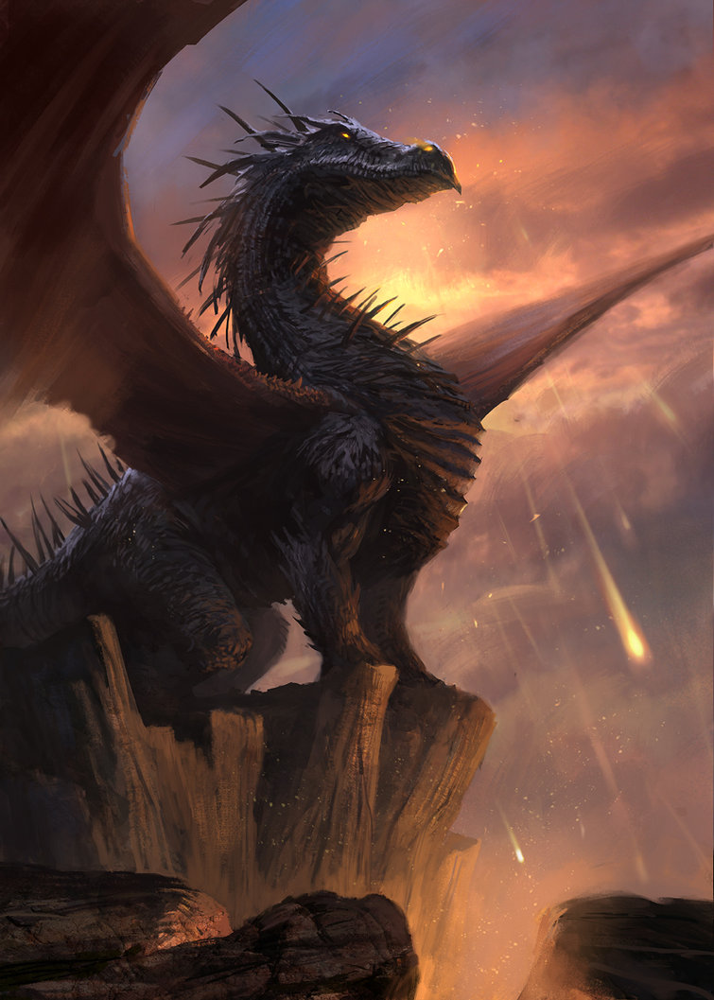

The History of dragons
The origin of dragons goes back thousands of years. It is unknown when they were first spotted and where they came from. Ancient scripts suggest they were brought down when lightning struck, or emerged from the ground with earthquakes
Dragon's are the apex predator of the lands. Nothing came close to rivaling their ferocity and bravery in combat. Their ability to breath fire along with their nigh impenetrable scales made them fearsome hunters
In the beginning it was proposed there were only a few species of dragons, but over time they spread out and slowly evolved to live in the environment they chose to inhabit
Dragons are proud creatures, able to decimate a herd and burn away forests in a day should they so choose. Early scholars say they even influenced the way the rivers turned and how the animals evolved for those hunted by them
By the time humans came, Dragons had spread around the world, cooped up in caves within tall mountains or hiding within large forests
There was little contact between the two at first, as humans tended to stay away from the mighty beasts, but there was always a few curious souls that wanted to find out what those large things flying in the sky were
Thus came about the first rumors of dragons, how they were large reptiles that could fly and breath fire, with scales that shone brilliantly in the sun. Few who ventured out ever came back, and people wondered what happened to them
Over the centuries as humans began growing in population and fear of dragons, village and town leaders sent out knights to try and kill those that were close to their settlement or were a threat to them, while others wanted to study them, to get to know more about them
From then on conflict began to grow between humans and dragons. Every time a group of knights were sent to kill a dragon, it would retaliate and burn their crops and steal their livestock, often setting a few houses on fire as well
The scholars at the time that wanted to learn more about dragons only had rumors and the aftermath of their destruction to go on, but on the lucky times the knights managed to kill a dragon, they often sent out researchers to try and learn what they could from the carcass
As humans grew more confident in their ability to deal with dragons, so too did their armament and means of dispatching them. Thus dragons were forced to stay clear of humans, for even though they were meant to be the apex predator of the lands, they did not reproduce as fast as us
The scholars, hearing the dragons had flown far away from human settlements, were frustrated yet eager to learn as much as they could from them
So far all that was known about the dragons they had observed in the area was their diet, some of their behavior, and anatomy taken from dead carcasses. They were able to identify the difference between male and females, where their armor was weakest, and how many eggs they had from the few they had found in the nests
Unwilling to give up, a group of devoted scholars and map makers ventured out in search of dragons to find out all they could about them. It was uncertain whether or not they would survive long enough to find a dragon, or even be able to observe them, but the information they would retrieve would be invaluable for generations to come
Dragon Lore
- It is said the first dragon came from the stars and made the mountains and oceans as it crashed into the earth
- Some people who have encountered dragons have said they have heard a voice in their heads, but it has not been proven whether dragons are capable of speaking or whether we would be able to understand them
- A poor unfortunate soul once saw a dragon land in his fields and pluck a cow right in front of his eyes. He was so frightened other people only heard him say how the dragon only had two legs and a pair of wings.
- It is unclear exactly how many dragons are in the world, but some say the earth depends on them, for when a dragon is killed, the plants and trees wither
- The earliest encounter of a dragon by a scholar was around 431 B.C., where the scholar announced it didn't attack him right away, rather it investigated him before flying away
- Dragon eggs are said to contain some amounts of silver in them, but this has been disproved when a band of knights smashed a nest they had raided to find the hatchlings inside and no sign of silver in the shell
- A women once came by a dragon near a stream and said it was the most beautiful creature she had seen in her life
- The first peaceful contact made between a scholar and a dragon wasn't until 1524 B.C., where dragon and scholar shared a short, but interesting conversation about each other
- It is said that a dragon that can't breath fire is a dragon that is past its prime